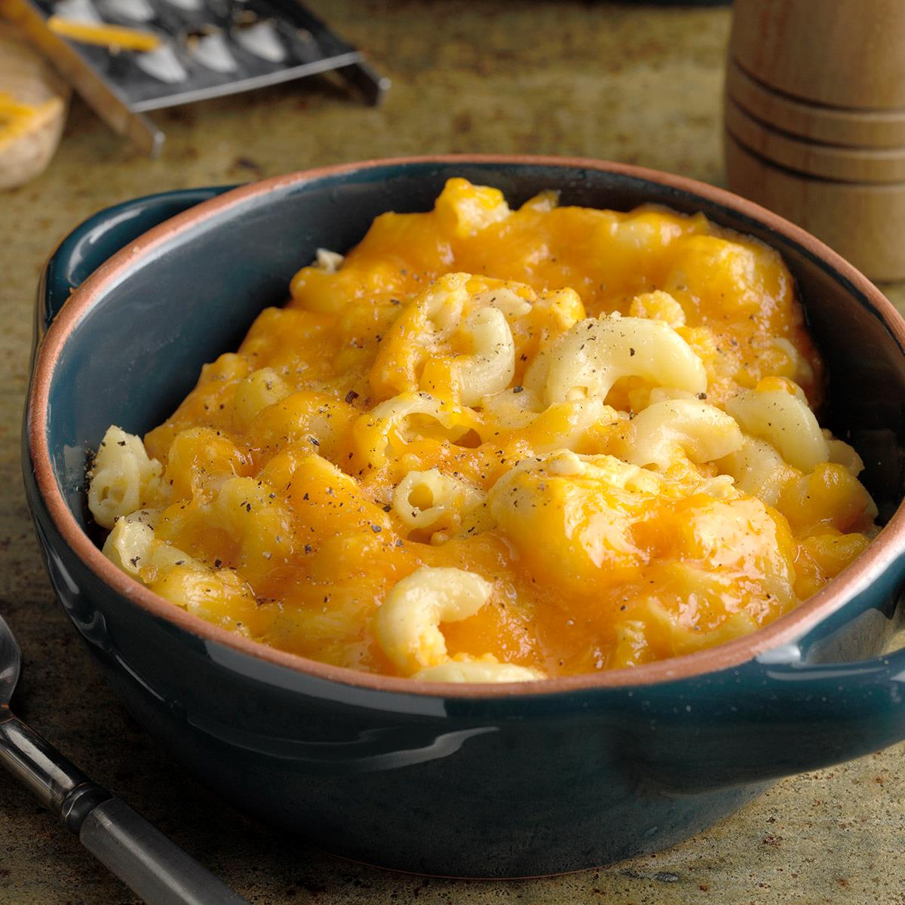

Slow Cooker Mac and Cheese

Hot and Tasty Mac and Cheese
Ingredients
1 (16 ounce) package elbow macaroni
½ cup butter
salt and ground black pepper to taste
1 (16 ounce) package shredded Cheddar cheese, divided
1 (5 ounce) can evaporated milk
2 eggs, well beaten
2 cups whole milk
1 (10.5 ounce) can condensed Cheddar cheese soup (such as Campbell's®)
1 pinch paprika, or as desired (Optional)
Steps
Fill a large pot with lightly salted water and bring to a rolling boil. Stir in macaroni and return to a boil. Cook pasta uncovered, stirring occasionally, until tender yet firm to the bite, about 8 minutes. Drain and transfer pasta to a slow cooker.
Add butter to pasta and stir until melted; season with salt and pepper. Sprinkle about 1/2 of the Cheddar cheese over pasta and stir.
Whisk evaporated milk and eggs together in a bowl until smooth; stir into pasta mixture.
Whisk milk and condensed soup together in a bowl until smooth; stir into pasta mixture.
Sprinkle remaining cheese over pasta mixture; garnish with paprika.
Cook on Low for 3 hours.
Serve hot and enjoy!